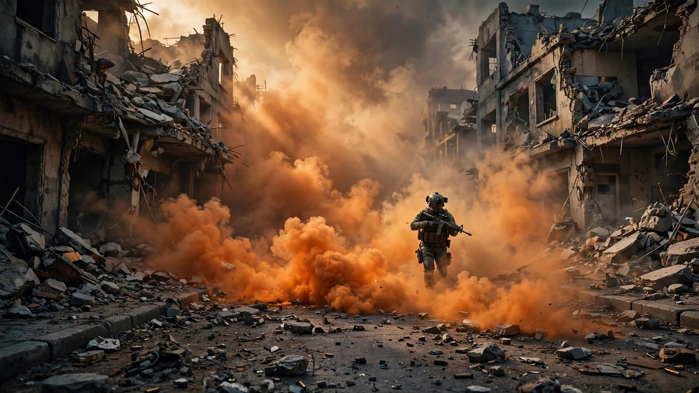

Grenade and Smoke Tactics: Win Fights with Utility

Most PUBG players treat throwables as an afterthought. They fill their backpack with ammunition, pick up a grenade only by accident, and then lose a fight against an enemy hiding behind a rock that a single frag would have solved. Utility wins fights that aim alone cannot: a frag forces an enemy out of cover, a smoke turns an open field into a safe crossing, a molotov blocks a doorway, and a stun gives you the half-second you need to win a room clear.
Know Your Throwables
PUBG has four main throwables, each with a distinct job. Frag grenades deal heavy damage in a radius and are your main tool for killing enemies behind cover. They take around five seconds to explode after the pin is pulled, so cooking them, holding the grenade for a couple of seconds before throwing, makes them harder to dodge. Smoke grenades create a thick cloud that blocks vision for about fifteen seconds; they do no damage, but they are the most versatile throwable in the game. Molotov cocktails spread fire and block narrow passages. Stun grenades blind and deafen enemies for a few seconds, which is devastating in close quarters.
| Throwable | Best Use | Key Detail |
|---|---|---|
| Frag grenade | Flush enemies from cover | Cook for 2-3 seconds before throwing |
| Smoke grenade | Crossings, revives, cover | Lasts about 15 seconds |
| Molotov | Block doorways, deny areas | Fire spreads and burns over time |
| Stun grenade | Room clears, close fights | Only works if enemy faces the flash |
Frag Grenades: The Cover Breaker
The frag grenade is the answer to the most frustrating situation in PUBG: an enemy behind a rock or inside a building who refuses to peek. Throwing a frag at their cover forces them to make a bad choice. If they stay, the explosion damages or kills them. If they move, they run into your line of fire. The key is cooking the grenade so it explodes on arrival or just after, giving the enemy no time to run. A frag cooked for three seconds and thrown at a target 20 metres away will explode almost as soon as it lands.
Where to aim your frags
- Behind rocks and trees where enemies are peeking from cover.
- Through windows and doorways into rooms you are about to enter.
- At the base of a ridge where a prone enemy is hiding.
- Onto a rooftop or balcony where a sniper is holding an angle.
Be careful in squads: call out your throw before you release it, because a frag does not distinguish between friend and foe. Frags bounce and roll, so aim for a flat surface near the enemy rather than a wall, where the grenade may bounce back toward you.
Smoke Grenades: The Most Valuable Throwable
If you could only carry one type of throwable, it should be smoke. Smokes solve problems that no amount of aim can fix. They let you cross an open field to reach the zone, revive a teammate in the open, loot a supply drop safely, or escape a fight that is going badly. The trick is to throw more than one: a single smoke leaves gaps that enemies can shoot through, but two or three smokes in a line create a solid wall of cover you can move behind.
Use smokes proactively, not reactively: a smoke thrown ahead of you along your escape route helps far more than one at your feet when you are already being shot. In the final circle, throw smokes between you and the last enemies, then move through them to a better position while they cannot see you. Remember smokes block your vision too, so do not throw one on top of yourself if you need to keep watching an enemy.
Molotovs, Stuns and Your Loadout
Molotovs are area-denial tools. Throw one at a doorway to stop an enemy pushing into your building, or onto a staircase to punish anyone climbing up. Stun grenades are the most situational throwable, but they are devastating in buildings: bounce one into a room, wait for the flash, then push in while the enemy is blind. The stun only works if the enemy is looking toward the explosion, so throw it around a corner.
Carry at least two frags and two smokes by the mid-game, and in squads divide the utility: one player carries extra smokes, another extra frags. Practice your throws in training mode: the throwing arc takes time to learn, and a grenade that lands five metres short is a wasted grenade.
Frequently Asked Questions
How long should I cook a frag grenade?
About two to three seconds for most throws. A frag explodes roughly five seconds after you pull the pin, so cooking for three seconds and throwing at a nearby target means it explodes almost on impact. Do not cook it for more than four seconds or it may explode in your hand.
Can enemies see through smoke grenades?
No, smoke fully blocks normal vision, and thermal scopes do not exist in PUBG, so a thick smoke wall hides you completely. However, enemies can still shoot blindly into the smoke or throw their own grenades at your last known position, so keep moving once you are inside it.
What is the best throwable for the final circle?
Smoke grenades, by a wide margin. In the final circle there is little cover, and smokes let you move, heal and reposition without being seen. Frags are a close second for flushing the last enemies out of their hiding spots, so carry both if you can.
Download PUBG: Battlegrounds
Play free on PC or mobile — download the official game from the links below.